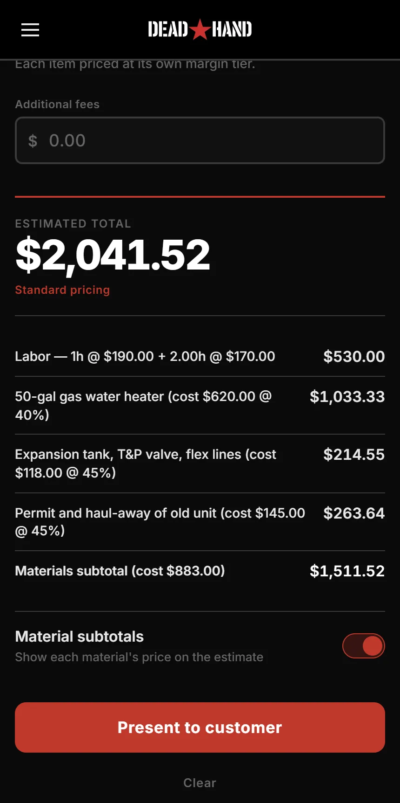
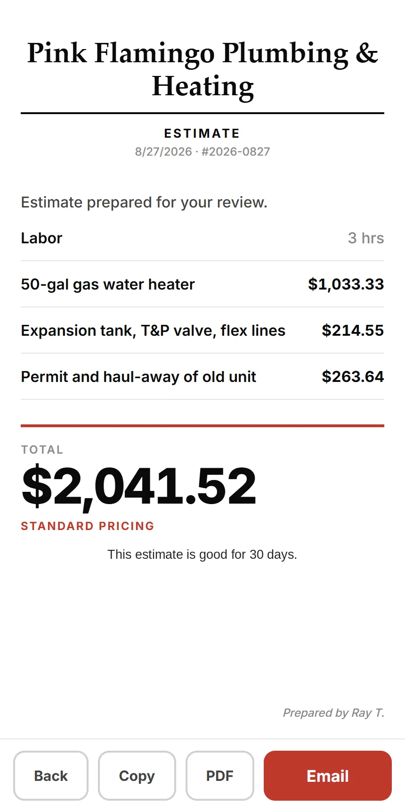

I kept losing money at the kitchen table — tired, customer waiting, and the number I said in the next thirty seconds was the one I had to honor in the morning. So I built this.

Every line shows what it cost you and what you're making on it.

Turn the phone around. A clean number, and none of that on it.
Set your labor rate, your material margin and your overhead once. After that you put in the hours and the parts and the right price comes out. One job you don't underprice pays for years of it. Cancel in the app, no phone call.
Already know your jobs? The Book is the changeouts and service calls you've done four hundred times, priced once from your own numbers and pulled in a tap. Flat by shop size — $30 a month for one truck, $80 for two to five — never per tech.
Change the hours and watch the price move. No sign-up, nothing to install.
Built by a working plumber in PA, for one- and two-truck shops. More at getdeadhand.com.
The other tools want a subscription for every tech, a setup fee before you quote anything, and a call with a salesman. This wants $15 and about a minute.